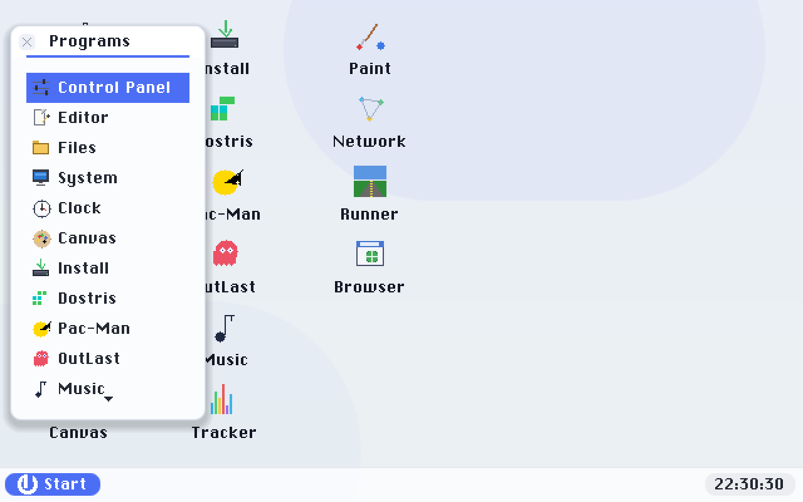

The desktop
A themed desktop with a window manager, a scrollable Start menu, a taskbar and a live clock. Every control works by keyboard or pointer.

Desktop furniture
- Desktop icons launch apps directly.
- The Start button carries the UnoDOS mark (a ring broken open with a numeral 1 through it) and opens a scrollable Start menu ("Programs") that lists every app and ends with Restart and Shut Down.
- The taskbar along the bottom shows a button for each open window; click one to bring it to the front.
- The clock in the corner shows the current time (and the battery level, on laptops).

Windows
Each window has a title bar with a close box. Drag the title bar to move a window. Every app window can be resized: grab the ridged grip in the bottom-right corner, or simply drag the window's right or bottom edge (an edge drag resizes that direction only). Resizing reflows the contents live: the Editor re-wraps its document, the Files panes grow, the browser re-wraps its text and Runner3D rescales its 3D view.
Keyboard & pointer reference
The desktop is designed to be fully usable without a mouse: Tab moves between controls, the arrow keys adjust the focused control, and Enter activates it. On a laptop, the TrackPoint or touchpad moves the pointer.
| Key | Action |
|---|---|
| Ctrl+Esc | Open / close the Start menu |
| Ctrl+W | Close the focused window |
| F2 / Ctrl+Tab | Raise the next open window |
| Tab / Shift+Tab | Move focus between controls in a window |
| ↑ ↓ ← → | Adjust the focused control (dropdown value, slider, spinner, list, menu) |
| Enter | Activate a button, checkbox or menu item |
| Esc | Leave a full-screen game (Runner3D) |